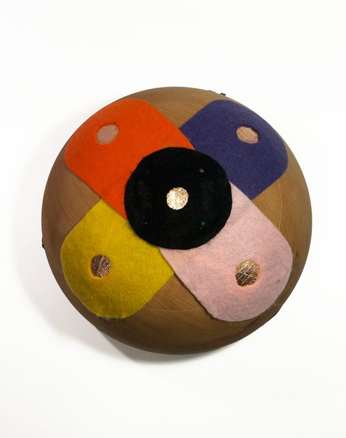
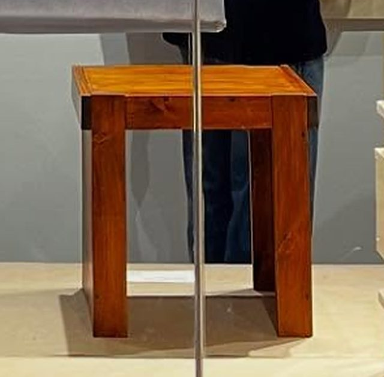
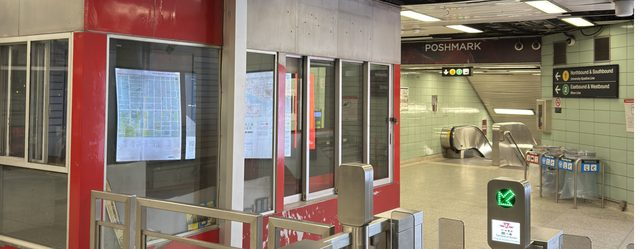

Solutions
Selected work
Proposals, research and prototypes outside the product line, each with the full document as a PDF.

On Baycrest's Possibilities Floor, residents living with dementia rely on care staff to prompt almost every activity, which is tiring for staff and can feel infantilizing for residents. Sonic Touch is lathe-turned from cherry, with five felt touch zones framing copper sensors: four play notes and one changes the mode. A hand resting on any zone gets an instant response, so cause and effect is obvious and no fine motor control is needed. Built as a working prototype and tested with residents and staff.
With Finlay Brodylo and Noah McBriarPDF 1.7MB
A stool built from 1x3 and 1x12 lumber with straight cuts only, so it can be made with basic tools. Screws are the only fasteners: it comes apart into a top and two sides for storage or transport, and every part unscrews back to its original cut length to be reused. Sturdy, light and easy to align using the other parts and a flat surface as the reference. Exhibited at the Design for Disassembly Exhibition, April 2025.
PDF 2.7MB
Decommissioned booths and vacant retail sit dark across the subway network, and under CPTED (crime prevention through environmental design) empty space invites the conditions riders worry about most. Station retail earns the TTC about a quarter of a cent per ride, while its advertising per ride is already close to Hong Kong's MTR. This proposal pitches a three-phase feasibility study: a spatial audit of dormant footprints, a benchmark of owned versus leased station retail and a full-scale prototype of one module. One intervention, four returns: revenue, rider satisfaction, ridership and safety.
PDF 3.1MBWork with the studio
Work exhibited at IDS Toronto and the Design for Disassembly Exhibition. A prototype tested with Baycrest.
Studio NEWO makes product renders, animations, 3D web models and production drawings from your CAD, for designers, hardware startups, institutions and brands preparing a launch. It also takes on custom furniture and lighting, and design and prototyping from a brief. The studio designs and builds its own products, so every file comes from someone who knows how things get made.
Samples Browser 3D model (Launch bundle) → 3D model with exploded view (Launch bundle) → Render and drawing samples on request.
Start a project →Ask about a custom piece →
Prices are starting points, in Canadian dollars. US clients pay the same figures in US dollars. Every job gets a written scope and a fixed price before work starts. Drawings are not engineer-stamped.
Final files are released once the last invoice is paid. One job at a time, so each gets full attention.
Send STEP, IGES, SolidWorks, Fusion or OBJ files. A messy model is fine: row 05 is for that.
Client files stay private. Work is shown in the portfolio only with permission.
How a job runs1. A short call or email.2. A one-page written quote within a few days.3. A 50% deposit to start.4. Two review rounds, then the balance and the final files.